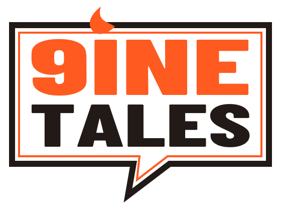

The expressive signature
Campaigns, posters, and spacious placements.
9inetales / Brand foundations
A confident, warm identity for Nigerian stories with room to travel. Expressive where we invite imagination. Clear where we explain, read, and build trust.

ORIGINAL VOICES.01 / The identity
Keep the speech bubble, bold lettering, and spark from your original. Simplify the construction and give each placement a version that fits.
Campaigns, posters, and spacious placements.

Headers, emails, and narrow spaces.
Profile images, icons, and favicons.

Dark surfaces and simple reproduction.
Keep clear space of at least one quarter of the symbol height around each logo. Increase it beside artwork and busy headlines.
Start at 160px wide for the stacked logo and 140px for the horizontal wordmark. Use the symbol at smaller sizes.
No stretching, gradients, extra shadows inside the logo, or placement over busy art. Use approved flat-colour exports.
These are proposed redraws, not exact vector traces of your original lettering. The original PNG is preserved in the downloadable kit. Final selection and name clearance remain pending.
02 / Colour
Neutral surfaces make room for varied creator artwork. Use orange with intention, not as the background of every screen.
Select a swatch to copy its colour.
5.50:1 calculated contrast. Preferred for signature buttons.
5.14:1 calculated contrast. An alternative for filled actions.
16.28:1 calculated contrast. Preferred for comfortable body text.
White on signature orange is 3.12:1: avoid it for normal-size text. Status colours are separate: success #236343 and error #A52A24. Always include words or symbols rather than relying on colour alone.
03 / Typography
A WORLD
WAITING
TO BE READ.
Aa Bb Cc Dd Ee Ff Gg
0123456789 & ! ?
Short campaign headlines and section titles. Sentence case for most section headings; uppercase for expressive campaigns.
Every world begins
with a voice.
A character you recognise. A place you’ve never been. A question that keeps you turning the page. Give the story space, and let the reader settle in.
Aa Bb Cc Dd Ee Ff Gg
0123456789 & ! ?
Ọlá · Èkó · Chidịmma
Body copy at 16–20px with 1.5–1.65 line height. Forms and navigation at 16px. Secondary notes at 14px where practical. Never use condensed display type for novel chapters.
Fonts are served locally. Sizes adapt to the viewport and respect text enlargement. Test language coverage with real creator material before committing to a reader font.
04 / Imagery & voice
The identity frames creator work. It should never force every comic or novel into the same visual style.

Use permissioned panels, covers, and excerpts with creator credits and agreed usage. Keep lettering legible; don’t crop important story content.
Draw on the story’s actual places, characters, and references. Avoid interchangeable cultural symbols or claims about mythology that the work does not support.
This generated illustration establishes atmosphere only. Replace it with commissioned or licensed creator artwork for launch wherever possible. Never present invented covers as a real catalogue.
Reader copy invites curiosity. Creator copy explains requirements and terms. Say “planned” when something is planned, and use concrete language around money and rights.
“Your next obsession could start here.”
Inviting and story focused.“Know the terms before you commit.”
Specific and respectful.“Saved offline chapters are a planned feature.”
Honest about what exists today.05 / The mobile experience
These are live, narrow-screen views of the actual prototype. Scroll inside them to explore the layout and try the signup states.
Opening: clear proposition, status, and two audience routes.
Signup: role selection, email, consent, and an honest confirmation.
06 / Reusable foundations
The downloadable kit includes vector logos, fonts, design tokens, imagery rules, review-ready copy, and the checks needed before a real waitlist launches.
2px corners, ink borders, and occasional offset shadows for primary invitations. Keep reading and explanation surfaces quieter.
Small hover responses and smooth anchor navigation. Respect reduced-motion settings. No animation should delay reading or signup.
Reuse tokens and established components. Critique specific problems, preserve good decisions, and record deliberate changes.
Review draft / September 2026. Commercial terms, launch timing, and final identity approval remain open.
{kind=link}
{kind=link}
{kind=link}